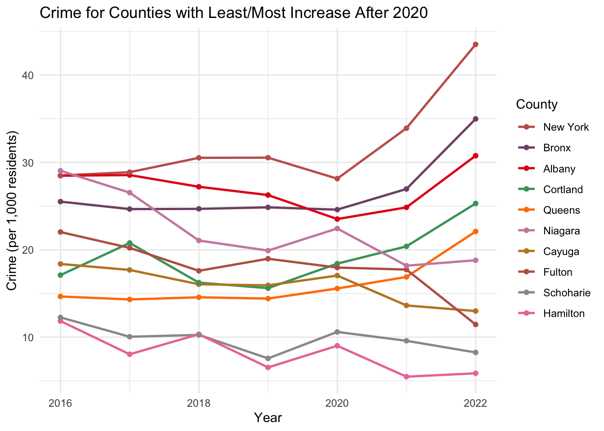

3.1 Overall crime numbers in NY State and the impact of COVID-10
Code
crime_ny$Year <-as.numeric(crime_ny$Year)crime_ny_filtered <- crime_ny %>%mutate(Year_Period =cut(Year, breaks =seq(1985, max(Year) +5, by =5), labels =FALSE),Year_Period_Label =paste0(floor((Year -1985) /5) *5+1985,"-",floor((Year -1985) /5) *5+1989) )crime_ny_filtered_county_tot <- crime_ny_filtered[crime_ny_filtered$Agency=='County Total',]tot_yearly <- crime_ny_filtered_county_tot %>%group_by(Year) %>%summarise(Total_Index =sum(Index.Total) ) %>%ungroup()ggplot(tot_yearly, aes(x = Year, y = Total_Index)) +geom_bar(stat ="identity") +scale_fill_viridis_c() +theme_minimal() +labs(title ="Total number of crimes in NY State by year",x ="Year",y ="Total number of recorded crimes")
We see an interesting uptick after 2021 potentially due to COVID-19. Worth investigating more!
Code
crime_ny_with_fips_and_pop$crime_pct <- crime_ny_with_fips_and_pop$Index.Total/crime_ny_with_fips_and_pop$Populationtot_yearly <- crime_ny_with_fips_and_pop %>%group_by(Year) %>%summarise(Total_crime =sum(Index.Total) ) %>%ungroup()tot_yearly <-merge(tot_yearly, pop_ny[pop_ny$Geography =='New York State', ], by.x ="Year", by.y ="Year", all.x =TRUE)tot_yearly$pct <- tot_yearly$Total_crime/tot_yearly$Populationggplot(tot_yearly, aes(x = Year, y = pct)) +geom_bar(stat ="identity") +scale_fill_viridis_c() +theme_minimal() +labs(title ="Crimes per population of crimes in NY State by year",x ="Year",y ="Recorded crimes per population")

3.1.1 Increase in crimes per population per county
Schuyler seems to have a 90% increase since covid:
Code
selected_data <- impact_of_covid[impact_of_covid$County =='Schuyler', ]selected_data <- selected_data[selected_data$Year >2015, ]ggplot(selected_data, aes(x = Year, y = crime_pct, color = County)) +geom_line() +scale_color_manual(values = my_palette) +labs(title ="Crime/population per Year for Counties with least increase post-covid",x ="Year",y ="Crime/population") +theme_minimal()
Warning: Using an external vector in selections was deprecated in tidyselect 1.1.0.
Please use `all_of()` or `any_of()` instead.
# Was:
data %>% select(columns_to_plot)
# Now:
data %>% select(all_of(columns_to_plot))
See <https://tidyselect.r-lib.org/reference/faq-external-vector.html>.
`summarise()` has grouped output by 'Year'. You can override using the
`.groups` argument.
Code
# ggplot(NYC, aes(x = Year)) +# geom_point(aes(y = Murder), color = "red", linetype = "solid", size = 1) +# geom_point(aes(y = Rape), color = "blue", linetype = "solid", size = 1) +# geom_point(aes(y = Robbery), color = "green", linetype = "solid", size = 1) +# labs(title = "Time Series Plot for Individual Columns in NYC County",# x = "Year",# y = "Value") +# theme_minimal()# ggplot(non_NYC_long_summarized, aes(x = Year, y = Sum_Value/Population, color = Variable)) +# geom_line() +# scale_color_manual(values = my_palette) +# labs(title = "Crime/population per Year for Counties with least increase post-covid",# x = "Year",# y = "Crime/population") +# theme_minimal()combined_NYC <-rbind(mutate(NYC_long_summarized, Location ="NYC"),mutate(non_NYC_long_summarized, Location ="Non-NYC"))ggplot(combined_NYC, aes(x = Year, y = Sum_Value/Population, color = Location, group = Location)) +geom_line() +labs(title ="NYC vs Non-NYC",x ="Year",y ="Crime/population") +scale_color_manual(values =c("NYC"="blue", "Non-NYC"="red")) +theme_minimal() +facet_wrap(~Variable, scales ="free_y")
Code
combined_NYC_bloomb <- combined_NYC[(combined_NYC$Year >1999) & (combined_NYC$Year <2015), ]ggplot(combined_NYC_bloomb, aes(x = Year, y = Sum_Value/Population, color = Location, group = Location)) +geom_line() +labs(title ="NYC vs Non-NYC",x ="Year",y ="Crime/population") +scale_color_manual(values =c("NYC"="blue", "Non-NYC"="red")) +theme_minimal() +facet_wrap(~Variable, scales ="free_y")
During 2002 - 2012, NYC imposed stop-and-frisk, we compare NYC crime reports (for 7 major crime stats) vs non-NYC. If the stop and frisk had any effect, we expect NYC crime stats to decrease stronger than non-NYC. Logic: stop and frisk -> create more safety -> less crime overall.
There are various flaws with our analysis: Do not consider other effects, etc.
To compare set starting point the same:
Code
combined_NYC_bloomb <- combined_NYC %>%filter(Year >1999& Year <2015) %>%group_by(Variable, Location) %>%mutate(adjusted_value = Sum_Value/Population -first(Sum_Value/Population))ggplot(combined_NYC_bloomb, aes(x = Year, y = adjusted_value, color = Location, group = Location)) +geom_line() +labs(title ="Adjusted NYC vs Non-NYC",x ="Year",y ="Adjusted") +scale_color_manual(values =c("NYC"="blue", "Non-NYC"="red")) +theme_minimal() +facet_wrap(~Variable, scales ="free_y")